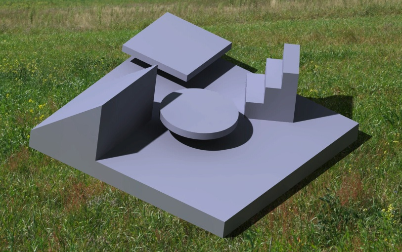
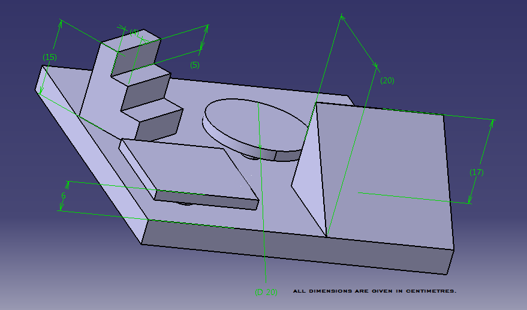
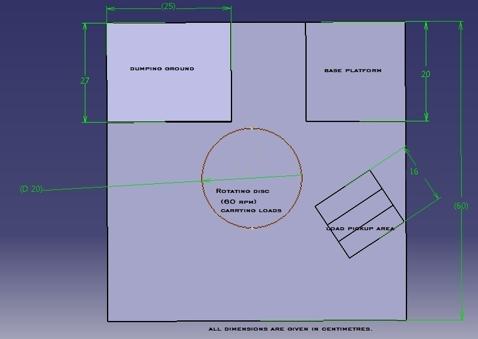

Introduction
Have you ever seen a car lifted into the air at an auto repair place? Have you ever wondered how an elevator can lift a load of people up into the air? Well, after this event, you'll have a better understanding of how these work, because you're going to look at hydraulic systems.
Hydraulic systems use a liquid, usually oil, to transmit force. This system works on the same principles as other mechanical systems and trades force for distance. Hydraulic systems are used on construction sites and in elevators. They help users perform tasks that they would not have the strength to do without the help of hydraulic machinery. They are able to perform tasks that involve large amounts of weight with seemingly little effort.
Well, enough jargons, if you are ready to feel the brute force of 'the incompressible water', this is your haven. May the force be with you……
Objective
To fabricate a hydraulic robotic arm which can lift heavy loads and place at desired spot.
Gameplay
The event comprises of two rounds-prelims and mains.
Prelims
- The objective of the bot in prelims is to pick loads and place them in a basket.
- Loads will of different weights and will be placed at varying distances and heights.
- The basket shall be placed at a height and will be fixed to a pedestal.
Mains
- Robots successfully completing the prelims shall be allowed to move to finals.
- The objective in mains is to stack the weights in a given pattern.
- Participants are required to pick the weights and place them on a platform in a specified pattern.
- Stacking of weights will be done as heavy weights at bottom and lighter weights at top.
Points Criteria
Prelims
- Different loads and different locations will fetch different points accordingly.
- The time taken shall be equivalent to negative points added to total points earned.
- Two time-outs can be allowed in case of mechanical failure which will cost negative points.
- A Maximum of 5 min will be given to each team to complete the task.
Finals
- Time allotted will be same as prelims.
- Points will be awarded on the basis of stacking position.
- Different loads will have different points.



Mechanism Specifications
- The robotic arm shall be operated by a hydraulic drive.
- The base of the arm will be rigidly fixed to the platform, even though it will be able to rotate about its axis imparting rotational motion to the body.
- For prelims, an electromagnet attached at end of the arm will undertake the job of lifting and placing the loads.
- 230V 50Hz AC supply will be provided.
- The base must fit in a square of side 20 cm.
- The arm should be compact in order to efficiently negotiate the arena.
- LEGO kits or its spare parts or premade mechanical parts are not allowed.
- Readymade gearboxes can be used but no other part of the robot should contain any readymade components.
- Hydraulic arm set-ups will be scrutinized before the start of event and those violating the above norms will be disqualified.
- Measurements of arena are provided in the arena snapshots itself.
- In case of a tie, the arm possessing the least weight shall be declared victorious.
- The toppling of mechanism is not a problem, there is always a solution if you 'C' (just kidding, we will provide the C-clamp.)
Instructions
- Each team can consist of a maximum of 5 members.
- The team members can belong to different institutes or colleges.
- No two teams can have a common member.
- Damage to the arena is unacceptable and will lead to immediate disqualification.
NOTE: - QUALIFICATION/DISQUALIFICATION RULES ARE LIABLE TO CHANGE, DEPENDING UPON CIRCUMSTANCES AND EVENT CO-ORDINATOR SHALL HOLD THE DISCRETIONARY AUTHORITY FOR THE SAME.
Stay tuned, like the Facebook page: Click herefor the facebook page
Tutorials
Click here for tutorial 1
Click here for tutorial 2
Click here for tutorial 3
Contacts
Event Coordinator
- Mayur Choudhari
+91 8986892311
choudhari.mayur33@gmail.com
Event Organiser
- Amit Kumar
+91 8521749988
yadavamitkumar007@yahoo.com
- Kushagra Kumar
+91 9122799709
erkushagra@ymail.com
- Shilpi Jaiswal
shilpijaiswal09@gmail.com